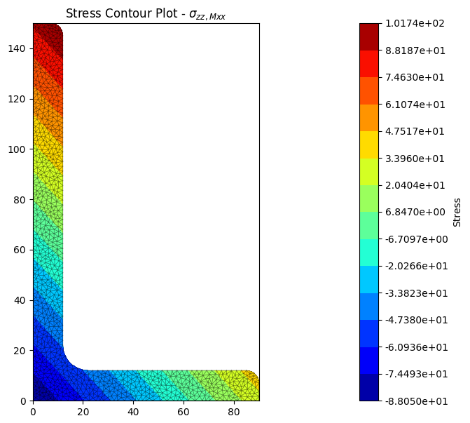
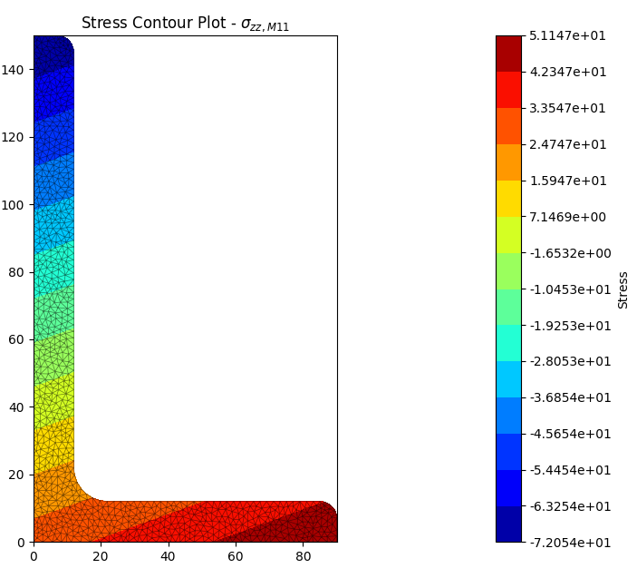
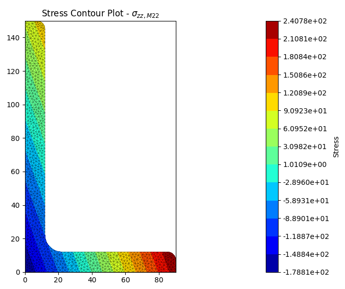
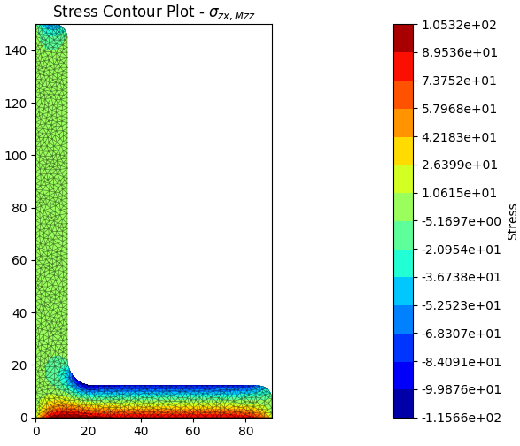
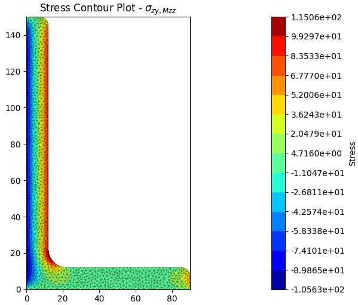
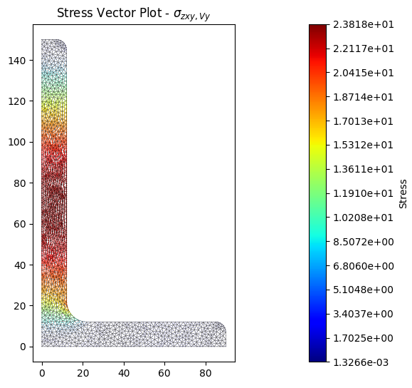
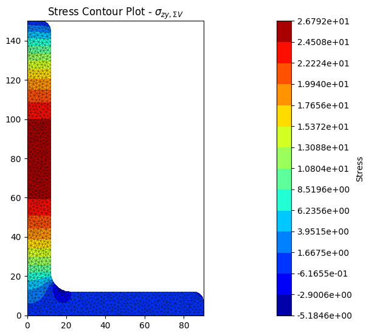
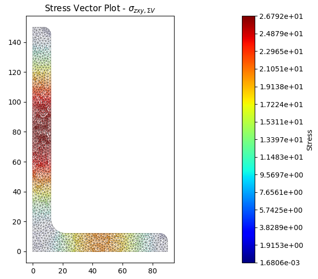
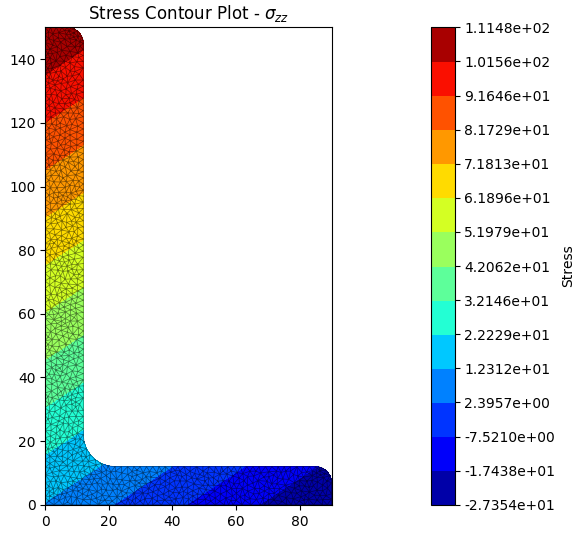
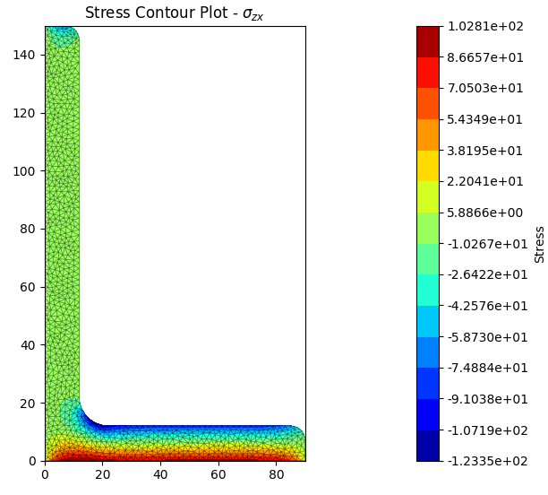

Viewing the Results¶
Printing a List of the Section Properties¶
A list of section properties that have been calculated by various analyses can
be printed to the terminal using the display_results()
method that belongs to every
CrossSection object.
-
CrossSection.display_results(fmt='8.6e')[source] Prints the results that have been calculated to the terminal.
Parameters: fmt (string) – Number formatting string The following example displays the geometric section properties for a 100D x 50W rectangle with three digits after the decimal point:
import sectionproperties.pre.sections as sections from sectionproperties.analysis.cross_section import CrossSection geometry = sections.RectangularSection(d=100, b=50) mesh = geometry.create_mesh(mesh_sizes=[5]) section = CrossSection(geometry, mesh) section.calculate_geometric_properties() section.display_results(fmt='.3f')
Getting Specific Section Properties¶
Alternatively, there are a number of methods that can be called on the
CrossSection object to return
a specific section property:
Cross-Section Area¶
-
CrossSection.get_area()[source] Returns: Cross-section area Return type: float section = CrossSection(geometry, mesh) section.calculate_geometric_properties() area = section.get_area()
Axial Rigidity¶
If material properties have been specified, returns the axial rigidity of the section.
-
CrossSection.get_ea()[source] Returns: Modulus weighted area (axial rigidity) Return type: float section = CrossSection(geometry, mesh) section.calculate_geometric_properties() ea = section.get_ea()
First Moments of Area (Global Axis)¶
-
CrossSection.get_q()[source] Returns: First moments of area about the global axis (qx, qy) Return type: tuple(float, float) section = CrossSection(geometry, mesh) section.calculate_geometric_properties() (qx, qy) = section.get_q()
Second Moments of Area (Global Axis)¶
-
CrossSection.get_ig()[source] Returns: Second moments of area about the global axis (ixx_g, iyy_g, ixy_g) Return type: tuple(float, float, float) section = CrossSection(geometry, mesh) section.calculate_geometric_properties() (ixx_g, iyy_g, ixy_g) = section.get_ig()
Elastic Centroid¶
-
CrossSection.get_c()[source] Returns: Elastic centroid (cx, cy) Return type: tuple(float, float) section = CrossSection(geometry, mesh) section.calculate_geometric_properties() (cx, cy) = section.get_c()
Second Moments of Area (Centroidal Axis)¶
-
CrossSection.get_ic()[source] Returns: Second moments of area centroidal axis (ixx_c, iyy_c, ixy_c) Return type: tuple(float, float, float) section = CrossSection(geometry, mesh) section.calculate_geometric_properties() (ixx_c, iyy_c, ixy_c) = section.get_ic()
Section Moduli (Centroidal Axis)¶
-
CrossSection.get_z()[source] Returns: Elastic section moduli about the centroidal axis with respect to the top and bottom fibres (zxx_plus, zxx_minus, zyy_plus, zyy_minus) Return type: tuple(float, float, float, float) section = CrossSection(geometry, mesh) section.calculate_geometric_properties() (zxx_plus, zxx_minus, zyy_plus, zyy_minus) = section.get_z()
Radii of Gyration (Centroidal Axis)¶
-
CrossSection.get_rc()[source] Returns: Radii of gyration about the centroidal axis (rx, ry) Return type: tuple(float, float) section = CrossSection(geometry, mesh) section.calculate_geometric_properties() (rx, ry) = section.get_rc()
Second Moments of Area (Principal Axis)¶
-
CrossSection.get_ip()[source] Returns: Second moments of area about the principal axis (i11_c, i22_c) Return type: tuple(float, float) section = CrossSection(geometry, mesh) section.calculate_geometric_properties() (i11_c, i22_c) = section.get_ip()
Principal Axis Angle¶
-
CrossSection.get_phi()[source] Returns: Principal bending axis angle Return type: float section = CrossSection(geometry, mesh) section.calculate_geometric_properties() phi = section.get_phi()
Section Moduli (Principal Axis)¶
-
CrossSection.get_zp()[source] Returns: Elastic section moduli about the principal axis with respect to the top and bottom fibres (z11_plus, z11_minus, z22_plus, z22_minus) Return type: tuple(float, float, float, float) section = CrossSection(geometry, mesh) section.calculate_geometric_properties() (z11_plus, z11_minus, z22_plus, z22_minus) = section.get_zp()
Radii of Gyration (Principal Axis)¶
-
CrossSection.get_rp()[source] Returns: Radii of gyration about the principal axis (r11, r22) Return type: tuple(float, float) section = CrossSection(geometry, mesh) section.calculate_geometric_properties() (r11, r22) = section.get_rp()
Torsion Constant¶
-
CrossSection.get_j()[source] Returns: St. Venant torsion constant Return type: float section = CrossSection(geometry, mesh) section.calculate_geometric_properties() section.calculate_warping_properties() j = section.get_j()
Shear Centre (Global Axis)¶
-
CrossSection.get_sc()[source] Returns: Centroidal axis shear centre (elasticity approach) (x_se, y_se) Return type: tuple(float, float) section = CrossSection(geometry, mesh) section.calculate_geometric_properties() section.calculate_warping_properties() (x_se, y_se) = section.get_sc()
Shear Centre (Principal Axis)¶
-
CrossSection.get_sc_p()[source] Returns: Principal axis shear centre (elasticity approach) (x11_se, y22_se) Return type: tuple(float, float) section = CrossSection(geometry, mesh) section.calculate_geometric_properties() section.calculate_warping_properties() (x11_se, y22_se) = section.get_sc_p()
Trefftz’s Shear Centre (Global Axis)¶
-
CrossSection.get_sc_t()[source] Returns: Centroidal axis shear centre (Trefftz’s approach) (x_st, y_st) Return type: tuple(float, float) section = CrossSection(geometry, mesh) section.calculate_geometric_properties() section.calculate_warping_properties() (x_st, y_st) = section.get_sc_t()
Warping Constant¶
-
CrossSection.get_gamma()[source] Returns: Warping constant Return type: float section = CrossSection(geometry, mesh) section.calculate_geometric_properties() section.calculate_warping_properties() gamma = section.get_gamma()
Shear Area (Global Axis)¶
-
CrossSection.get_As()[source] Returns: Shear area for loading about the centroidal axis (A_sx, A_sy) Return type: tuple(float, float) section = CrossSection(geometry, mesh) section.calculate_geometric_properties() section.calculate_warping_properties() (A_sx, A_sy) = section.get_As()
Shear Area (Principal Axis)¶
-
CrossSection.get_As_p()[source] Returns: Shear area for loading about the principal bending axis (A_s11, A_s22) Return type: tuple(float, float) section = CrossSection(geometry, mesh) section.calculate_geometric_properties() section.calculate_warping_properties() (A_s11, A_s22) = section.get_As_p()
Plastic Centroid¶
-
CrossSection.get_pc()[source] Returns: Centroidal axis plastic centroid (x_pc, y_pc) Return type: tuple(float, float) section = CrossSection(geometry, mesh) section.calculate_geometric_properties() section.calculate_plastic_properties() (x_pc, y_pc) = section.get_pc()
Plastic Centroid (Principal Axis)¶
-
CrossSection.get_pc_p()[source] Returns: Principal bending axis plastic centroid (x11_pc, y22_pc) Return type: tuple(float, float) section = CrossSection(geometry, mesh) section.calculate_geometric_properties() section.calculate_plastic_properties() (x11_pc, y22_pc) = section.get_pc_p()
Plastic Section Moduli¶
-
CrossSection.get_s()[source] Returns: Plastic section moduli about the centroidal axis (sxx, syy) Return type: tuple(float, float) If material properties have been specified, returns the plastic moment \(M_p = f_y S\).
section = CrossSection(geometry, mesh) section.calculate_geometric_properties() section.calculate_plastic_properties() (sxx, syy) = section.get_s()
Plastic Section Moduli (Principal Axis)¶
-
CrossSection.get_sp()[source] Returns: Plastic section moduli about the principal bending axis (s11, s22) Return type: tuple(float, float) If material properties have been specified, returns the plastic moment \(M_p = f_y S\).
section = CrossSection(geometry, mesh) section.calculate_geometric_properties() section.calculate_plastic_properties() (s11, s22) = section.get_sp()
Shape Factors¶
-
CrossSection.get_sf()[source] Returns: Centroidal axis shape factors with respect to the top and bottom fibres (sf_xx_plus, sf_xx_minus, sf_yy_plus, sf_yy_minus) Return type: tuple(float, float, float, float) section = CrossSection(geometry, mesh) section.calculate_geometric_properties() section.calculate_plastic_properties() (sf_xx_plus, sf_xx_minus, sf_yy_plus, sf_yy_minus) = section.get_sf()
Shape Factors (Principal Axis)¶
-
CrossSection.get_sf_p()[source] Returns: Principal bending axis shape factors with respect to the top and bottom fibres (sf_11_plus, sf_11_minus, sf_22_plus, sf_22_minus) Return type: tuple(float, float, float, float) section = CrossSection(geometry, mesh) section.calculate_geometric_properties() section.calculate_plastic_properties() (sf_11_plus, sf_11_minus, sf_22_plus, sf_22_minus) = section.get_sf_p()
Section Property Centroids Plots¶
A plot of the centroids (elastic, plastic and shear centre) can be produced with the finite element mesh in the background:
-
CrossSection.plot_centroids(pause=True)[source] Plots the elastic centroid, the shear centre, the plastic centroids and the principal axis, if they have been calculated, on top of the finite element mesh.
Parameters: pause (bool) – If set to true, the figure pauses the script until the window is closed. If set to false, the script continues immediately after the window is rendered. The following example analyses a 200 PFC section and displays a plot of the centroids:
import sectionproperties.pre.sections as sections from sectionproperties.analysis.cross_section import CrossSection geometry = sections.PfcSection(d=200, b=75, t_f=12, t_w=6, r=12, n_r=8) mesh = geometry.create_mesh(mesh_sizes=[2.5]) section = CrossSection(geometry, mesh) section.calculate_geometric_properties() section.calculate_warping_properties() section.calculate_plastic_properties() section.plot_centroids()

Plot of the centroids generated by the above example.
The following example analyses a 150x90x12 UA section and displays a plot of the centroids:
import sectionproperties.pre.sections as sections from sectionproperties.analysis.cross_section import CrossSection geometry = sections.AngleSection(d=150, b=90, t=12, r_r=10, r_t=5, n_r=8) mesh = geometry.create_mesh(mesh_sizes=[2.5]) section = CrossSection(geometry, mesh) section.calculate_geometric_properties() section.calculate_warping_properties() section.calculate_plastic_properties() section.plot_centroids()

Plot of the centroids generated by the above example.
Plotting Cross-Section Stresses¶
There are a number of methods that can be called from a StressResult
object to plot the various cross-section stresses. These methods take the following form:
StressResult.plot_(stress/vector)_(action)_(stresstype)
where:
- stress denotes a contour plot and vector denotes a vector plot.
- action denotes the type of action causing the stress e.g. mxx for bending moment about the x-axis. Note that the action is omitted for stresses caused by the application of all actions.
- stresstype denotes the type of stress that is being plotted e.g. zx for the x-component of shear stress.
The examples shown in the methods below are performed on a 150x90x12 UA
(unequal angle) section. The CrossSection
object is created below:
import sectionproperties.pre.sections as sections
from sectionproperties.analysis.cross_section import CrossSection
geometry = sections.AngleSection(d=150, b=90, t=12, r_r=10, r_t=5, n_r=8)
mesh = geometry.create_mesh(mesh_sizes=[2.5])
section = CrossSection(geometry, mesh)
Primary Stress Plots¶
Axial Stress (\(\sigma_{zz,N}\))¶
-
StressPost.plot_stress_n_zz(pause=True)[source] Produces a contour plot of the normal stress \(\sigma_{zz,N}\) resulting from the applied axial load \(N\).
Parameters: pause (bool) – If set to true, the figure pauses the script until the window is closed. If set to false, the script continues immediately after the window is rendered. The following example plots the normal stress within a 150x90x12 UA section resulting from an axial force of 10 kN:
import sectionproperties.pre.sections as sections from sectionproperties.analysis.cross_section import CrossSection geometry = sections.AngleSection(d=150, b=90, t=12, r_r=10, r_t=5, n_r=8) mesh = geometry.create_mesh(mesh_sizes=[2.5]) section = CrossSection(geometry, mesh) section.calculate_geometric_properties() section.calculate_warping_properties() stress_post = section.calculate_stress(N=10e3) stress_post.plot_stress_n_zz()

Contour plot of the axial stress.
Bending Stress (\(\sigma_{zz,Mxx}\))¶
-
StressPost.plot_stress_mxx_zz(pause=True)[source] Produces a contour plot of the normal stress \(\sigma_{zz,Mxx}\) resulting from the applied bending moment \(M_{xx}\).
Parameters: pause (bool) – If set to true, the figure pauses the script until the window is closed. If set to false, the script continues immediately after the window is rendered. The following example plots the normal stress within a 150x90x12 UA section resulting from an bending moment about the x-axis of 5 kN.m:
import sectionproperties.pre.sections as sections from sectionproperties.analysis.cross_section import CrossSection geometry = sections.AngleSection(d=150, b=90, t=12, r_r=10, r_t=5, n_r=8) mesh = geometry.create_mesh(mesh_sizes=[2.5]) section = CrossSection(geometry, mesh) section.calculate_geometric_properties() section.calculate_warping_properties() stress_post = section.calculate_stress(Mxx=5e6) stress_post.plot_stress_mxx_zz()
Contour plot of the bending stress.
{kind=link}
Bending Stress (\(\sigma_{zz,Myy}\))¶
-
StressPost.plot_stress_myy_zz(pause=True)[source] Produces a contour plot of the normal stress \(\sigma_{zz,Myy}\) resulting from the applied bending moment \(M_{yy}\).
Parameters: pause (bool) – If set to true, the figure pauses the script until the window is closed. If set to false, the script continues immediately after the window is rendered. The following example plots the normal stress within a 150x90x12 UA section resulting from an bending moment about the y-axis of 2 kN.m:
import sectionproperties.pre.sections as sections from sectionproperties.analysis.cross_section import CrossSection geometry = sections.AngleSection(d=150, b=90, t=12, r_r=10, r_t=5, n_r=8) mesh = geometry.create_mesh(mesh_sizes=[2.5]) section = CrossSection(geometry, mesh) section.calculate_geometric_properties() section.calculate_warping_properties() stress_post = section.calculate_stress(Myy=2e6) stress_post.plot_stress_myy_zz()

Contour plot of the bending stress.
Bending Stress (\(\sigma_{zz,M11}\))¶
-
StressPost.plot_stress_m11_zz(pause=True)[source] Produces a contour plot of the normal stress \(\sigma_{zz,M11}\) resulting from the applied bending moment \(M_{11}\).
Parameters: pause (bool) – If set to true, the figure pauses the script until the window is closed. If set to false, the script continues immediately after the window is rendered. The following example plots the normal stress within a 150x90x12 UA section resulting from an bending moment about the 11-axis of 5 kN.m:
import sectionproperties.pre.sections as sections from sectionproperties.analysis.cross_section import CrossSection geometry = sections.AngleSection(d=150, b=90, t=12, r_r=10, r_t=5, n_r=8) mesh = geometry.create_mesh(mesh_sizes=[2.5]) section = CrossSection(geometry, mesh) section.calculate_geometric_properties() section.calculate_warping_properties() stress_post = section.calculate_stress(M11=5e6) stress_post.plot_stress_m11_zz()
Contour plot of the bending stress.
{kind=link}
Bending Stress (\(\sigma_{zz,M22}\))¶
-
StressPost.plot_stress_m22_zz(pause=True)[source] Produces a contour plot of the normal stress \(\sigma_{zz,M22}\) resulting from the applied bending moment \(M_{22}\).
Parameters: pause (bool) – If set to true, the figure pauses the script until the window is closed. If set to false, the script continues immediately after the window is rendered. The following example plots the normal stress within a 150x90x12 UA section resulting from an bending moment about the 22-axis of 2 kN.m:
import sectionproperties.pre.sections as sections from sectionproperties.analysis.cross_section import CrossSection geometry = sections.AngleSection(d=150, b=90, t=12, r_r=10, r_t=5, n_r=8) mesh = geometry.create_mesh(mesh_sizes=[2.5]) section = CrossSection(geometry, mesh) section.calculate_geometric_properties() section.calculate_warping_properties() stress_post = section.calculate_stress(M22=5e6) stress_post.plot_stress_m22_zz()
Contour plot of the bending stress.
{kind=link}
Bending Stress (\(\sigma_{zz,\Sigma M}\))¶
-
StressPost.plot_stress_m_zz(pause=True)[source] Produces a contour plot of the normal stress \(\sigma_{zz,\Sigma M}\) resulting from all applied bending moments \(M_{xx} + M_{yy} + M_{11} + M_{22}\).
Parameters: pause (bool) – If set to true, the figure pauses the script until the window is closed. If set to false, the script continues immediately after the window is rendered. The following example plots the normal stress within a 150x90x12 UA section resulting from a bending moment about the x-axis of 5 kN.m, a bending moment about the y-axis of 2 kN.m and a bending moment of 3 kN.m about the 11-axis:
import sectionproperties.pre.sections as sections from sectionproperties.analysis.cross_section import CrossSection geometry = sections.AngleSection(d=150, b=90, t=12, r_r=10, r_t=5, n_r=8) mesh = geometry.create_mesh(mesh_sizes=[2.5]) section = CrossSection(geometry, mesh) section.calculate_geometric_properties() section.calculate_warping_properties() stress_post = section.calculate_stress(Mxx=5e6, Myy=2e6, M11=3e6) stress_post.plot_stress_m_zz()

Contour plot of the bending stress.
Torsion Stress (\(\sigma_{zx,Mzz}\))¶
-
StressPost.plot_stress_mzz_zx(pause=True)[source] Produces a contour plot of the x-component of the shear stress \(\sigma_{zx,Mzz}\) resulting from the applied torsion moment \(M_{zz}\).
Parameters: pause (bool) – If set to true, the figure pauses the script until the window is closed. If set to false, the script continues immediately after the window is rendered. The following example plots the x-component of the shear stress within a 150x90x12 UA section resulting from an applied torsion moment of 1 kN.m:
import sectionproperties.pre.sections as sections from sectionproperties.analysis.cross_section import CrossSection geometry = sections.AngleSection(d=150, b=90, t=12, r_r=10, r_t=5, n_r=8) mesh = geometry.create_mesh(mesh_sizes=[2.5]) section = CrossSection(geometry, mesh) section.calculate_geometric_properties() section.calculate_warping_properties() stress_post = section.calculate_stress(Mzz=1e6) stress_post.plot_stress_mzz_zx()
Contour plot of the shear stress.
{kind=link}
Torsion Stress (\(\sigma_{zy,Mzz}\))¶
-
StressPost.plot_stress_mzz_zy(pause=True)[source] Produces a contour plot of the y-component of the shear stress \(\sigma_{zy,Mzz}\) resulting from the applied torsion moment \(M_{zz}\).
Parameters: pause (bool) – If set to true, the figure pauses the script until the window is closed. If set to false, the script continues immediately after the window is rendered. The following example plots the y-component of the shear stress within a 150x90x12 UA section resulting from an applied torsion moment of 1 kN.m:
import sectionproperties.pre.sections as sections from sectionproperties.analysis.cross_section import CrossSection geometry = sections.AngleSection(d=150, b=90, t=12, r_r=10, r_t=5, n_r=8) mesh = geometry.create_mesh(mesh_sizes=[2.5]) section = CrossSection(geometry, mesh) section.calculate_geometric_properties() section.calculate_warping_properties() stress_post = section.calculate_stress(Mzz=1e6) stress_post.plot_stress_mzz_zy()
Contour plot of the shear stress.
{kind=link}
Torsion Stress (\(\sigma_{zxy,Mzz}\))¶
-
StressPost.plot_stress_mzz_zxy(pause=True)[source] Produces a contour plot of the resultant shear stress \(\sigma_{zxy,Mzz}\) resulting from the applied torsion moment \(M_{zz}\).
Parameters: pause (bool) – If set to true, the figure pauses the script until the window is closed. If set to false, the script continues immediately after the window is rendered. The following example plots a contour of the resultant shear stress within a 150x90x12 UA section resulting from an applied torsion moment of 1 kN.m:
import sectionproperties.pre.sections as sections from sectionproperties.analysis.cross_section import CrossSection geometry = sections.AngleSection(d=150, b=90, t=12, r_r=10, r_t=5, n_r=8) mesh = geometry.create_mesh(mesh_sizes=[2.5]) section = CrossSection(geometry, mesh) section.calculate_geometric_properties() section.calculate_warping_properties() stress_post = section.calculate_stress(Mzz=1e6) stress_post.plot_stress_mzz_zxy()

Contour plot of the shear stress.
-
StressPost.plot_vector_mzz_zxy(pause=True)[source] Produces a vector plot of the resultant shear stress \(\sigma_{zxy,Mzz}\) resulting from the applied torsion moment \(M_{zz}\).
Parameters: pause (bool) – If set to true, the figure pauses the script until the window is closed. If set to false, the script continues immediately after the window is rendered. The following example generates a vector plot of the shear stress within a 150x90x12 UA section resulting from an applied torsion moment of 1 kN.m:
import sectionproperties.pre.sections as sections from sectionproperties.analysis.cross_section import CrossSection geometry = sections.AngleSection(d=150, b=90, t=12, r_r=10, r_t=5, n_r=8) mesh = geometry.create_mesh(mesh_sizes=[2.5]) section = CrossSection(geometry, mesh) section.calculate_geometric_properties() section.calculate_warping_properties() stress_post = section.calculate_stress(Mzz=1e6) stress_post.plot_vector_mzz_zxy()

Vector plot of the shear stress.
Shear Stress (\(\sigma_{zx,Vx}\))¶
-
StressPost.plot_stress_vx_zx(pause=True)[source] Produces a contour plot of the x-component of the shear stress \(\sigma_{zx,Vx}\) resulting from the applied shear force \(V_{x}\).
Parameters: pause (bool) – If set to true, the figure pauses the script until the window is closed. If set to false, the script continues immediately after the window is rendered. The following example plots the x-component of the shear stress within a 150x90x12 UA section resulting from an applied shear force in the x-direction of 15 kN:
import sectionproperties.pre.sections as sections from sectionproperties.analysis.cross_section import CrossSection geometry = sections.AngleSection(d=150, b=90, t=12, r_r=10, r_t=5, n_r=8) mesh = geometry.create_mesh(mesh_sizes=[2.5]) section = CrossSection(geometry, mesh) section.calculate_geometric_properties() section.calculate_warping_properties() stress_post = section.calculate_stress(Vx=15e3) stress_post.plot_stress_vx_zx()

Contour plot of the shear stress.
Shear Stress (\(\sigma_{zy,Vx}\))¶
-
StressPost.plot_stress_vx_zy(pause=True)[source] Produces a contour plot of the y-component of the shear stress \(\sigma_{zy,Vx}\) resulting from the applied shear force \(V_{x}\).
Parameters: pause (bool) – If set to true, the figure pauses the script until the window is closed. If set to false, the script continues immediately after the window is rendered. The following example plots the y-component of the shear stress within a 150x90x12 UA section resulting from an applied shear force in the x-direction of 15 kN:
import sectionproperties.pre.sections as sections from sectionproperties.analysis.cross_section import CrossSection geometry = sections.AngleSection(d=150, b=90, t=12, r_r=10, r_t=5, n_r=8) mesh = geometry.create_mesh(mesh_sizes=[2.5]) section = CrossSection(geometry, mesh) section.calculate_geometric_properties() section.calculate_warping_properties() stress_post = section.calculate_stress(Vx=15e3) stress_post.plot_stress_vx_zy()

Contour plot of the shear stress.
Shear Stress (\(\sigma_{zxy,Vx}\))¶
-
StressPost.plot_stress_vx_zxy(pause=True)[source] Produces a contour plot of the resultant shear stress \(\sigma_{zxy,Vx}\) resulting from the applied shear force \(V_{x}\).
Parameters: pause (bool) – If set to true, the figure pauses the script until the window is closed. If set to false, the script continues immediately after the window is rendered. The following example plots a contour of the resultant shear stress within a 150x90x12 UA section resulting from an applied shear force in the x-direction of 15 kN:
import sectionproperties.pre.sections as sections from sectionproperties.analysis.cross_section import CrossSection geometry = sections.AngleSection(d=150, b=90, t=12, r_r=10, r_t=5, n_r=8) mesh = geometry.create_mesh(mesh_sizes=[2.5]) section = CrossSection(geometry, mesh) section.calculate_geometric_properties() section.calculate_warping_properties() stress_post = section.calculate_stress(Vx=15e3) stress_post.plot_stress_vx_zxy()

Contour plot of the shear stress.
-
StressPost.plot_vector_vx_zxy(pause=True)[source] Produces a vector plot of the resultant shear stress \(\sigma_{zxy,Vx}\) resulting from the applied shear force \(V_{x}\).
Parameters: pause (bool) – If set to true, the figure pauses the script until the window is closed. If set to false, the script continues immediately after the window is rendered. The following example generates a vector plot of the shear stress within a 150x90x12 UA section resulting from an applied shear force in the x-direction of 15 kN:
import sectionproperties.pre.sections as sections from sectionproperties.analysis.cross_section import CrossSection geometry = sections.AngleSection(d=150, b=90, t=12, r_r=10, r_t=5, n_r=8) mesh = geometry.create_mesh(mesh_sizes=[2.5]) section = CrossSection(geometry, mesh) section.calculate_geometric_properties() section.calculate_warping_properties() stress_post = section.calculate_stress(Vx=15e3) stress_post.plot_vector_vx_zxy()

Vector plot of the shear stress.
Shear Stress (\(\sigma_{zx,Vy}\))¶
-
StressPost.plot_stress_vy_zx(pause=True)[source] Produces a contour plot of the x-component of the shear stress \(\sigma_{zx,Vy}\) resulting from the applied shear force \(V_{y}\).
Parameters: pause (bool) – If set to true, the figure pauses the script until the window is closed. If set to false, the script continues immediately after the window is rendered. The following example plots the x-component of the shear stress within a 150x90x12 UA section resulting from an applied shear force in the y-direction of 30 kN:
import sectionproperties.pre.sections as sections from sectionproperties.analysis.cross_section import CrossSection geometry = sections.AngleSection(d=150, b=90, t=12, r_r=10, r_t=5, n_r=8) mesh = geometry.create_mesh(mesh_sizes=[2.5]) section = CrossSection(geometry, mesh) section.calculate_geometric_properties() section.calculate_warping_properties() stress_post = section.calculate_stress(Vy=30e3) stress_post.plot_stress_vy_zx()

Contour plot of the shear stress.
Shear Stress (\(\sigma_{zy,Vy}\))¶
-
StressPost.plot_stress_vy_zy(pause=True)[source] Produces a contour plot of the y-component of the shear stress \(\sigma_{zy,Vy}\) resulting from the applied shear force \(V_{y}\).
Parameters: pause (bool) – If set to true, the figure pauses the script until the window is closed. If set to false, the script continues immediately after the window is rendered. The following example plots the y-component of the shear stress within a 150x90x12 UA section resulting from an applied shear force in the y-direction of 30 kN:
import sectionproperties.pre.sections as sections from sectionproperties.analysis.cross_section import CrossSection geometry = sections.AngleSection(d=150, b=90, t=12, r_r=10, r_t=5, n_r=8) mesh = geometry.create_mesh(mesh_sizes=[2.5]) section = CrossSection(geometry, mesh) section.calculate_geometric_properties() section.calculate_warping_properties() stress_post = section.calculate_stress(Vy=30e3) stress_post.plot_stress_vy_zy()

Contour plot of the shear stress.
Shear Stress (\(\sigma_{zxy,Vy}\))¶
-
StressPost.plot_stress_vy_zxy(pause=True)[source] Produces a contour plot of the resultant shear stress \(\sigma_{zxy,Vy}\) resulting from the applied shear force \(V_{y}\).
Parameters: pause (bool) – If set to true, the figure pauses the script until the window is closed. If set to false, the script continues immediately after the window is rendered. The following example plots a contour of the resultant shear stress within a 150x90x12 UA section resulting from an applied shear force in the y-direction of 30 kN:
import sectionproperties.pre.sections as sections from sectionproperties.analysis.cross_section import CrossSection geometry = sections.AngleSection(d=150, b=90, t=12, r_r=10, r_t=5, n_r=8) mesh = geometry.create_mesh(mesh_sizes=[2.5]) section = CrossSection(geometry, mesh) section.calculate_geometric_properties() section.calculate_warping_properties() stress_post = section.calculate_stress(Vy=30e3) stress_post.plot_stress_vy_zxy()

Contour plot of the shear stress.
-
StressPost.plot_vector_vy_zxy(pause=True)[source] Produces a vector plot of the resultant shear stress \(\sigma_{zxy,Vy}\) resulting from the applied shear force \(V_{y}\).
Parameters: pause (bool) – If set to true, the figure pauses the script until the window is closed. If set to false, the script continues immediately after the window is rendered. The following example generates a vector plot of the shear stress within a 150x90x12 UA section resulting from an applied shear force in the y-direction of 30 kN:
import sectionproperties.pre.sections as sections from sectionproperties.analysis.cross_section import CrossSection geometry = sections.AngleSection(d=150, b=90, t=12, r_r=10, r_t=5, n_r=8) mesh = geometry.create_mesh(mesh_sizes=[2.5]) section = CrossSection(geometry, mesh) section.calculate_geometric_properties() section.calculate_warping_properties() stress_post = section.calculate_stress(Vy=30e3) stress_post.plot_vector_vy_zxy()
Vector plot of the shear stress.
{kind=link}
Shear Stress (\(\sigma_{zx,\Sigma V}\))¶
-
StressPost.plot_stress_v_zx(pause=True)[source] Produces a contour plot of the x-component of the shear stress \(\sigma_{zx,\Sigma V}\) resulting from the sum of the applied shear forces \(V_{x} + V_{y}\).
Parameters: pause (bool) – If set to true, the figure pauses the script until the window is closed. If set to false, the script continues immediately after the window is rendered. The following example plots the x-component of the shear stress within a 150x90x12 UA section resulting from an applied shear force of 15 kN in the x-direction and 30 kN in the y-direction:
import sectionproperties.pre.sections as sections from sectionproperties.analysis.cross_section import CrossSection geometry = sections.AngleSection(d=150, b=90, t=12, r_r=10, r_t=5, n_r=8) mesh = geometry.create_mesh(mesh_sizes=[2.5]) section = CrossSection(geometry, mesh) section.calculate_geometric_properties() section.calculate_warping_properties() stress_post = section.calculate_stress(Vx=15e3, Vy=30e3) stress_post.plot_stress_v_zx()

Contour plot of the shear stress.
Shear Stress (\(\sigma_{zy,\Sigma V}\))¶
-
StressPost.plot_stress_v_zy(pause=True)[source] Produces a contour plot of the y-component of the shear stress \(\sigma_{zy,\Sigma V}\) resulting from the sum of the applied shear forces \(V_{x} + V_{y}\).
Parameters: pause (bool) – If set to true, the figure pauses the script until the window is closed. If set to false, the script continues immediately after the window is rendered. The following example plots the y-component of the shear stress within a 150x90x12 UA section resulting from an applied shear force of 15 kN in the x-direction and 30 kN in the y-direction:
import sectionproperties.pre.sections as sections from sectionproperties.analysis.cross_section import CrossSection geometry = sections.AngleSection(d=150, b=90, t=12, r_r=10, r_t=5, n_r=8) mesh = geometry.create_mesh(mesh_sizes=[2.5]) section = CrossSection(geometry, mesh) section.calculate_geometric_properties() section.calculate_warping_properties() stress_post = section.calculate_stress(Vx=15e3, Vy=30e3) stress_post.plot_stress_v_zy()
Contour plot of the shear stress.
{kind=link}
Shear Stress (\(\sigma_{zxy,\Sigma V}\))¶
-
StressPost.plot_stress_v_zxy(pause=True)[source] Produces a contour plot of the resultant shear stress \(\sigma_{zxy,\Sigma V}\) resulting from the sum of the applied shear forces \(V_{x} + V_{y}\).
Parameters: pause (bool) – If set to true, the figure pauses the script until the window is closed. If set to false, the script continues immediately after the window is rendered. The following example plots a contour of the resultant shear stress within a 150x90x12 UA section resulting from an applied shear force of 15 kN in the x-direction and 30 kN in the y-direction:
import sectionproperties.pre.sections as sections from sectionproperties.analysis.cross_section import CrossSection geometry = sections.AngleSection(d=150, b=90, t=12, r_r=10, r_t=5, n_r=8) mesh = geometry.create_mesh(mesh_sizes=[2.5]) section = CrossSection(geometry, mesh) section.calculate_geometric_properties() section.calculate_warping_properties() stress_post = section.calculate_stress(Vx=15e3, Vy=30e3) stress_post.plot_stress_v_zxy()

Contour plot of the shear stress.
-
StressPost.plot_vector_v_zxy(pause=True)[source] Produces a vector plot of the resultant shear stress \(\sigma_{zxy,\Sigma V}\) resulting from the sum of the applied shear forces \(V_{x} + V_{y}\).
Parameters: pause (bool) – If set to true, the figure pauses the script until the window is closed. If set to false, the script continues immediately after the window is rendered. The following example generates a vector plot of the shear stress within a 150x90x12 UA section resulting from an applied shear force of 15 kN in the x-direction and 30 kN inthe y-direction:
import sectionproperties.pre.sections as sections from sectionproperties.analysis.cross_section import CrossSection geometry = sections.AngleSection(d=150, b=90, t=12, r_r=10, r_t=5, n_r=8) mesh = geometry.create_mesh(mesh_sizes=[2.5]) section = CrossSection(geometry, mesh) section.calculate_geometric_properties() section.calculate_warping_properties() stress_post = section.calculate_stress(Vx=15e3, Vy=30e3) stress_post.plot_vector_v_zxy()
Vector plot of the shear stress.
{kind=link}
Combined Stress Plots¶
Normal Stress (\(\sigma_{zz}\))¶
-
StressPost.plot_stress_zz(pause=True)[source] Produces a contour plot of the combined normal stress \(\sigma_{zz}\) resulting from all applied actions.
Parameters: pause (bool) – If set to true, the figure pauses the script until the window is closed. If set to false, the script continues immediately after the window is rendered. The following example plots the normal stress within a 150x90x12 UA section resulting from an axial force of 100 kN, a bending moment about the x-axis of 5 kN.m and a bending moment about the y-axis of 2 kN.m:
import sectionproperties.pre.sections as sections from sectionproperties.analysis.cross_section import CrossSection geometry = sections.AngleSection(d=150, b=90, t=12, r_r=10, r_t=5, n_r=8) mesh = geometry.create_mesh(mesh_sizes=[2.5]) section = CrossSection(geometry, mesh) section.calculate_geometric_properties() section.calculate_warping_properties() stress_post = section.calculate_stress(N=100e3, Mxx=5e6, Myy=2e6) stress_post.plot_stress_zz()
Contour plot of the normal stress.
{kind=link}
Shear Stress (\(\sigma_{zx}\))¶
-
StressPost.plot_stress_zx(pause=True)[source] Produces a contour plot of the x-component of the shear stress \(\sigma_{zx}\) resulting from all applied actions.
Parameters: pause (bool) – If set to true, the figure pauses the script until the window is closed. If set to false, the script continues immediately after the window is rendered. The following example plots the x-component of the shear stress within a 150x90x12 UA section resulting from a torsion moment of 1 kN.m and a shear force of 30 kN in the y-direction:
import sectionproperties.pre.sections as sections from sectionproperties.analysis.cross_section import CrossSection geometry = sections.AngleSection(d=150, b=90, t=12, r_r=10, r_t=5, n_r=8) mesh = geometry.create_mesh(mesh_sizes=[2.5]) section = CrossSection(geometry, mesh) section.calculate_geometric_properties() section.calculate_warping_properties() stress_post = section.calculate_stress(Mzz=1e6, Vy=30e3) stress_post.plot_stress_zx()
Contour plot of the shear stress.
{kind=link}
Shear Stress (\(\sigma_{zy}\))¶
-
StressPost.plot_stress_zy(pause=True)[source] Produces a contour plot of the y-component of the shear stress \(\sigma_{zy}\) resulting from all applied actions.
Parameters: pause (bool) – If set to true, the figure pauses the script until the window is closed. If set to false, the script continues immediately after the window is rendered. The following example plots the y-component of the shear stress within a 150x90x12 UA section resulting from a torsion moment of 1 kN.m and a shear force of 30 kN in the y-direction:
import sectionproperties.pre.sections as sections from sectionproperties.analysis.cross_section import CrossSection geometry = sections.AngleSection(d=150, b=90, t=12, r_r=10, r_t=5, n_r=8) mesh = geometry.create_mesh(mesh_sizes=[2.5]) section = CrossSection(geometry, mesh) section.calculate_geometric_properties() section.calculate_warping_properties() stress_post = section.calculate_stress(Mzz=1e6, Vy=30e3) stress_post.plot_stress_zy()

Contour plot of the shear stress.
Shear Stress (\(\sigma_{zxy}\))¶
-
StressPost.plot_stress_zxy(pause=True)[source] Produces a contour plot of the resultant shear stress \(\sigma_{zxy}\) resulting from all applied actions.
Parameters: pause (bool) – If set to true, the figure pauses the script until the window is closed. If set to false, the script continues immediately after the window is rendered. The following example plots a contour of the resultant shear stress within a 150x90x12 UA section resulting from a torsion moment of 1 kN.m and a shear force of 30 kN in the y-direction:
import sectionproperties.pre.sections as sections from sectionproperties.analysis.cross_section import CrossSection geometry = sections.AngleSection(d=150, b=90, t=12, r_r=10, r_t=5, n_r=8) mesh = geometry.create_mesh(mesh_sizes=[2.5]) section = CrossSection(geometry, mesh) section.calculate_geometric_properties() section.calculate_warping_properties() stress_post = section.calculate_stress(Mzz=1e6, Vy=30e3) stress_post.plot_stress_zxy()

Contour plot of the shear stress.
-
StressPost.plot_vector_zxy(pause=True)[source] Produces a vector plot of the resultant shear stress \(\sigma_{zxy}\) resulting from all applied actions.
Parameters: pause (bool) – If set to true, the figure pauses the script until the window is closed. If set to false, the script continues immediately after the window is rendered. The following example generates a vector plot of the shear stress within a 150x90x12 UA section resulting from a torsion moment of 1 kN.m and a shear force of 30 kN in the y-direction:
import sectionproperties.pre.sections as sections from sectionproperties.analysis.cross_section import CrossSection geometry = sections.AngleSection(d=150, b=90, t=12, r_r=10, r_t=5, n_r=8) mesh = geometry.create_mesh(mesh_sizes=[2.5]) section = CrossSection(geometry, mesh) section.calculate_geometric_properties() section.calculate_warping_properties() stress_post = section.calculate_stress(Mzz=1e6, Vy=30e3) stress_post.plot_vector_zxy()

Vector plot of the shear stress.
von Mises Stress (\(\sigma_{vM}\))¶
-
StressPost.plot_stress_vm(pause=True)[source] Produces a contour plot of the von Mises \(\sigma_{vM}\) resulting from all applied actions.
Parameters: pause (bool) – If set to true, the figure pauses the script until the window is closed. If set to false, the script continues immediately after the window is rendered. The following example plots a contour of the von Mises stress within a 150x90x12 UA section resulting from the following actions:
- \(N = 50\) kN
- \(M_{xx} = -5\) kN.m
- \(M_{22} = 2.5\) kN.m
- \(M_{zz} = 1.5\) kN.m
- \(V_{x} = 10\) kN
- \(V_{y} = 5\) kN
import sectionproperties.pre.sections as sections from sectionproperties.analysis.cross_section import CrossSection geometry = sections.AngleSection(d=150, b=90, t=12, r_r=10, r_t=5, n_r=8) mesh = geometry.create_mesh(mesh_sizes=[2.5]) section = CrossSection(geometry, mesh) section.calculate_geometric_properties() section.calculate_warping_properties() stress_post = section.calculate_stress(N=50e3, Mxx=-5e6, M22=2.5e6, Mzz=0.5e6, Vx=10e3, Vy=5e3) stress_post.plot_stress_vm()

Contour plot of the von Mises stress.